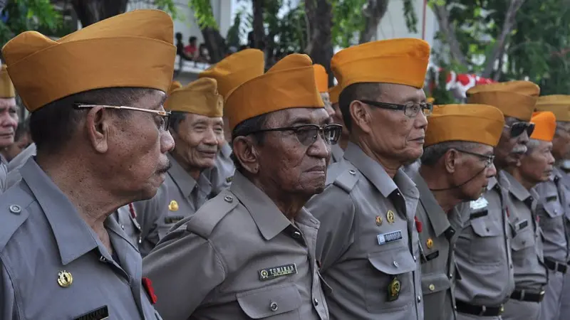
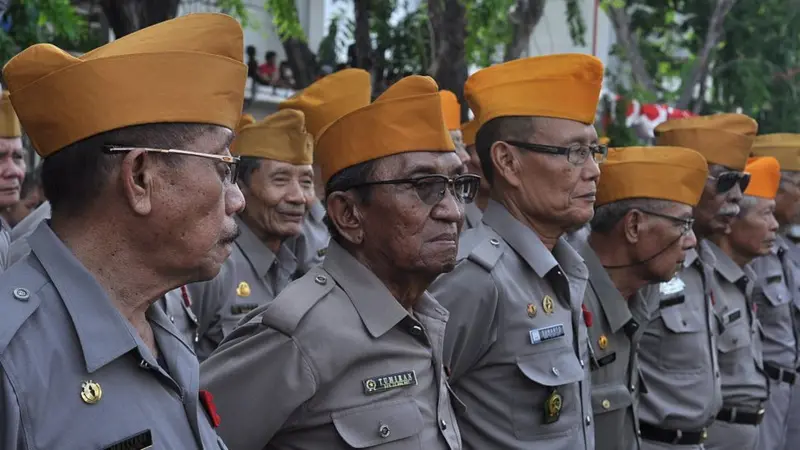
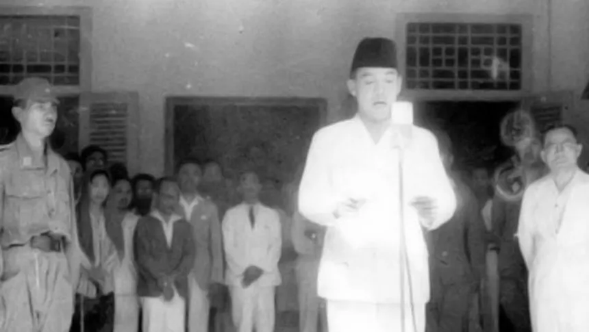

Penghormatan
HUT VETERAN NASIONAL INDONESIA
Peringatan Hari Veteran Nasional diperingati setiap tanggal 10 Agustus. Melansir laman Kementerian Pertahanan (Kemhan) RI, Hari Veteran Nasional sejatinya telah diputuskan oleh Presiden Soekarno pada tahun 1945 yang diperkuat kembali dengan amanah tertulis Presiden Soekarno pada tahun 1965. Kemudian pada tahun 2014 Presiden RI Susilo Bambang Yudhoyono (SBY) mengesahkan tanggal 10 Agustus sebagai Hari Veteran Nasional.
"Veteran adalah seorang pejuang pembela dan yang mempertahankan kemerdekaan Indonesia." Bangsa yang besar adalah bangsa yang menghormati dan menghargai jasa para pahlawan, semoga semua para pahlawan indonesia, pejuang indonesia, veteran indonesia di manapun dalam keadaan sehat, disejahterakan dan diperhatikan oleh pemerintah dan yang gugur dalam peperangan masa lampau diberi tempat di sisi-Nya. Terimakasih, semoga Tuhan menerima darma bakti atas perjuangan mereka demi negeri ini. NKRI HARGA MATI.
 

HUT RI KE-79
Indonesia Merdeka pada tanggal 17 Agustus 1945 yang diproklamasikan pada hari Jumat di bulan Ramadhan di rumah Ir. Soekarno, melalui banyak perjuangan dan pertumpahan darah yang dilalui oleh para pejuang dan veteran Indonesia, Terimakasih para pejuang yang berjuang demi kemerdekaan Indonesia yang membuat semua rakyat Indonesia bisa bebas dari penjajahan dan bisa menikmati dunia dengan bebas tanpa kekangan dari para penjajah.
